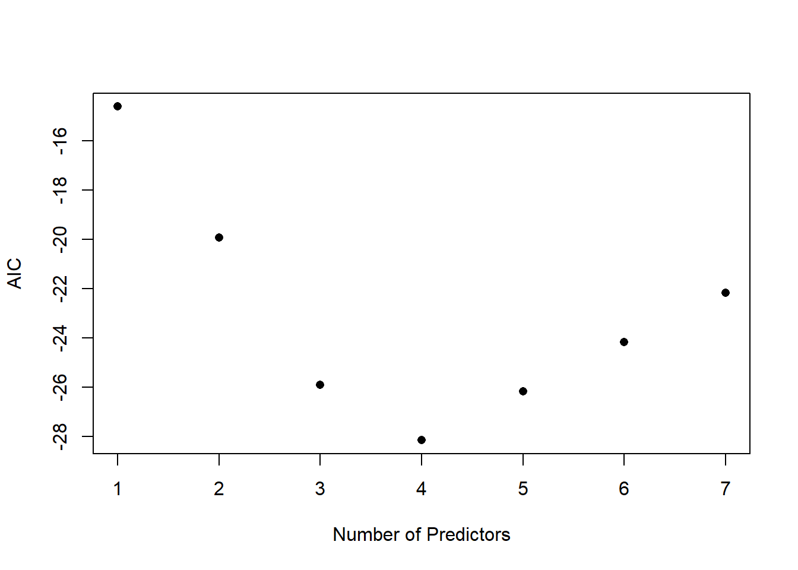
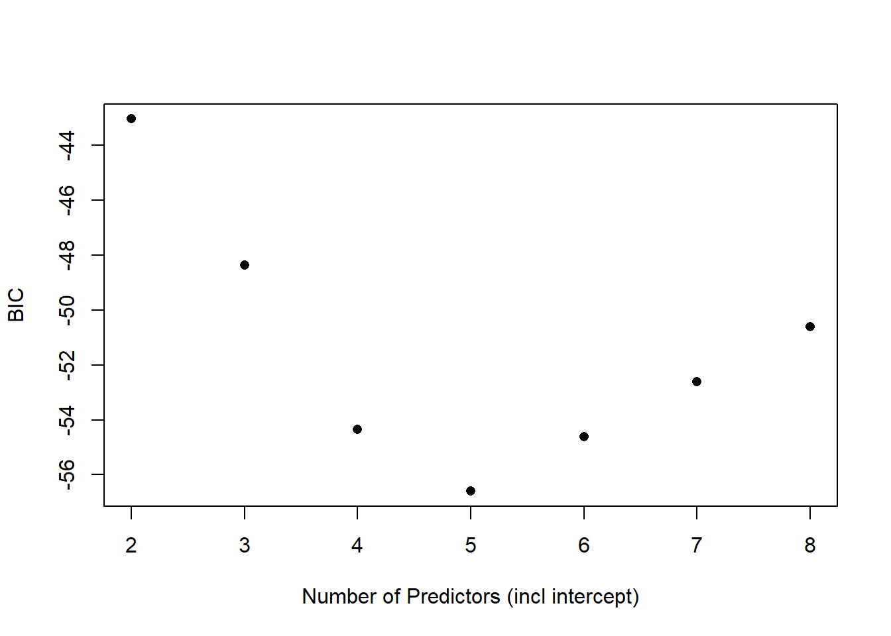
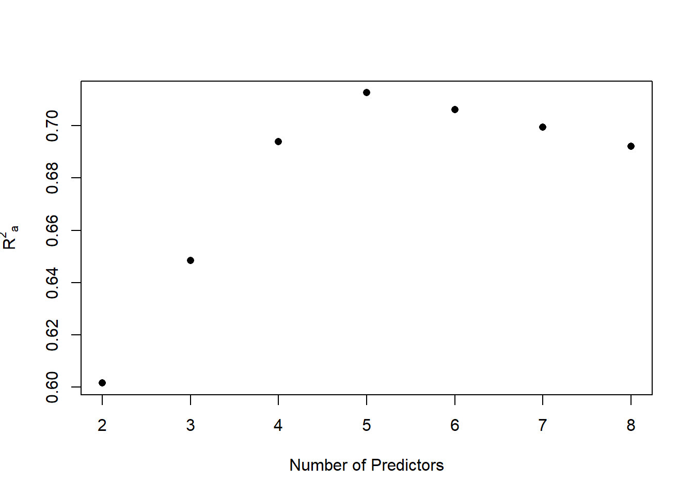
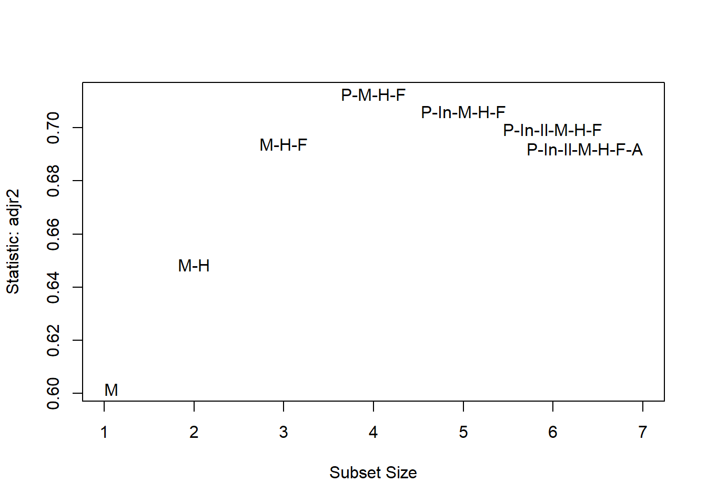
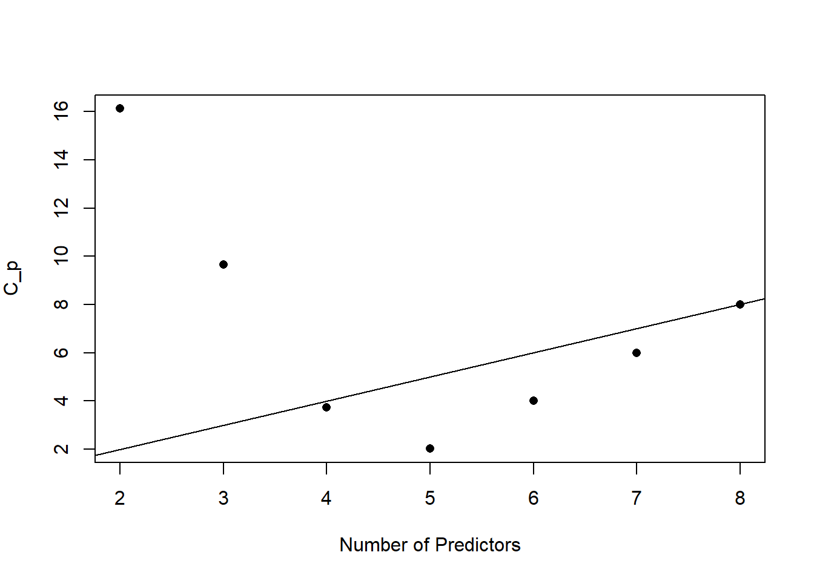
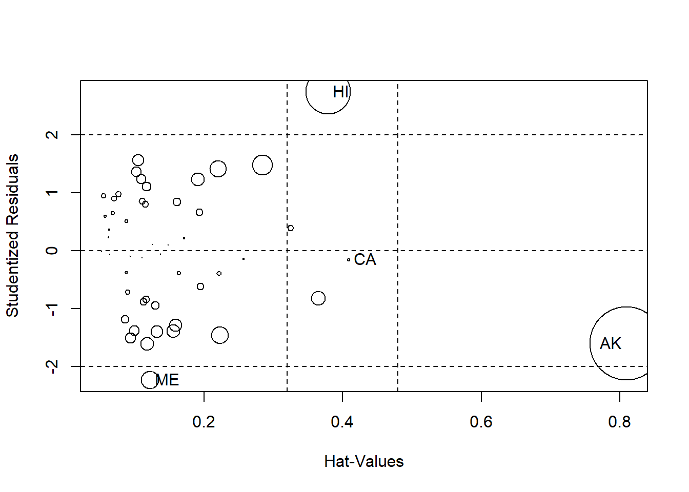
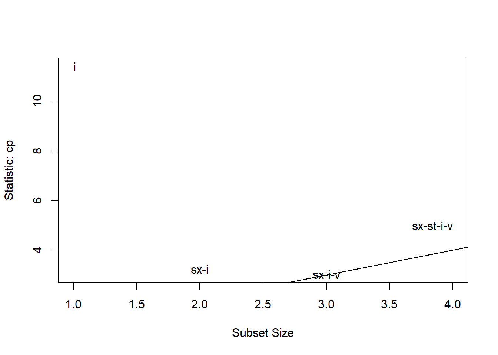
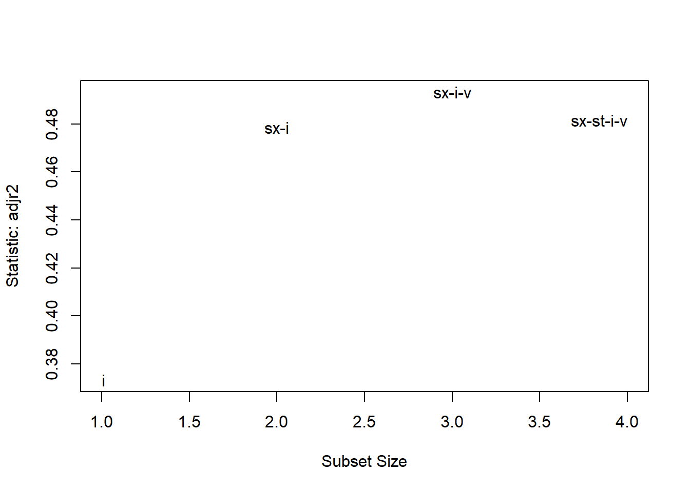

Chapter 12 Variable Selection
There are two aspects to variable selection:
- The strategy used to search for the “optimal” model.
- The criterion used to compare models.
12.2 Backward elimination
Backward elimination is the simplest of all variable selection procedures. We start with all predictors and remove the least significant predictor. Stop once all the noise has been removed.
12.3 Question 3: Which of the predictors would you remove from the full model? What criteria did you use to make that decision?
lmod <- lm(Life.Exp ~ ., data = statedata)
faraway::sumary(lmod)
#> Estimate Std. Error t value Pr(>|t|)
#> (Intercept) 7.0943e+01 1.7480e+00 40.5859 < 2.2e-16
#> Population 5.1800e-05 2.9187e-05 1.7748 0.08318
#> Income -2.1804e-05 2.4443e-04 -0.0892 0.92934
#> Illiteracy 3.3820e-02 3.6628e-01 0.0923 0.92687
#> Murder -3.0112e-01 4.6621e-02 -6.4590 8.68e-08
#> HS.Grad 4.8929e-02 2.3323e-02 2.0979 0.04197
#> Frost -5.7350e-03 3.1432e-03 -1.8246 0.07519
#> Area -7.3832e-08 1.6682e-06 -0.0443 0.96491
#>
#> n = 50, p = 8, Residual SE = 0.74478, R-Squared = 0.74back1 <- update(lmod, . ~ . - Area)
faraway::sumary(back1)
#> Estimate Std. Error t value Pr(>|t|)
#> (Intercept) 7.0989e+01 1.3875e+00 51.1652 < 2.2e-16
#> Population 5.1883e-05 2.8788e-05 1.8023 0.07852
#> Income -2.4440e-05 2.3429e-04 -0.1043 0.91740
#> Illiteracy 2.8459e-02 3.4163e-01 0.0833 0.93400
#> Murder -3.0182e-01 4.3344e-02 -6.9634 1.454e-08
#> HS.Grad 4.8472e-02 2.0667e-02 2.3454 0.02369
#> Frost -5.7758e-03 2.9702e-03 -1.9446 0.05839
#>
#> n = 50, p = 7, Residual SE = 0.73608, R-Squared = 0.74- This does not imply the other variables are not related to the response.
lmod1 <- lm(Life.Exp ~ Illiteracy, data = statedata)
faraway::sumary(lmod1)
#> Estimate Std. Error t value Pr(>|t|)
#> (Intercept) 72.39495 0.33834 213.9734 < 2.2e-16
#> Illiteracy -1.29602 0.25701 -5.0427 6.969e-06
#>
#> n = 50, p = 2, Residual SE = 1.09659, R-Squared = 0.3512.4 Forward Selection
Forward selection starts with the null model (only an intercept), and adds regressors one at a time until we can no longer improve the error criterion by adding a single regressor.
- For example, first add the predictor with the smallest \(p\)-value.
- Then compare models with the first predictor plus a second predictor and add the predictor which has the smallest \(p\)-value.
12.5 Stepwise Regression
Stepwise regression is a combination of backward elimination and forward selection.
- This addresses the situation where variables are added or removed early in the process and we want to change our mind. Stepwise selection can miss the optimal model because we do not consider all possible models due to the one-at-a-time nature of adding/removing regressors.
- \(p\)-values should not be taken as very accurate in stepwise searches because we are bound to see small \(p\)-values due to chance alone.
- Stepwise selection tends to produce simpler models that are not necessarily the best for prediction.
12.6 Model Hierarchy
We must respect hierarchy in models when it is naturally present.
- In polynomial models, \(X^2\) is a higher order term than \(X\).
- A lower order term should be retained if a higher order term is retained to increase the flexibility.
- The model \(Y=\beta_0+\beta_2 X^2+\epsilon\), the maximum/minimum value MUST occur \(x=0\)
- For the model \(y=\beta_0+\beta_1 X+\beta_2 X^2+\epsilon\), the maximum/minimum value can occur anywhere along the real line (depending on what the data suggest).
- If we fit the model \(y=\beta_0+\beta_1 X+\beta_2 X^2+\epsilon\) and \(\beta_1\) is not significant, it would NOT make sense to remove \(X\) from the model but still keep \(X^2\).
12.7 Criterion-Based Procedures
Akaike’s Information Criterion (AIC) and the Bayesian Information Criterion (BIC) are two information-based criteria for variable selection.
12.8 Akaike’s Information Criterion (AIC)
\(\mbox{AIC}(\mathcal{M})=-2L(\mathcal{M})+2p_{\mathcal{M}}\), where \(\mathcal{M}\) is the model, \(L(\mathcal{M})\) is the log-likelihood of the model using the MLE estimates of the parameters, and \(p_{\mathcal{M}}\) is the number of regression coefficients in model \(\mathcal{M}\).
For linear regression models, \(-2L(\mathcal{M})=n\log{(\mbox{RSS}_{\mathcal{M}}/n)} + c\), where \(c\) is a constant that depends only on the observed data and not on the model, and \(\mbox{RSS}_{\mathcal{M}}\) is the RSS of model \(\mathcal{M}\). The constant \(c\) is the same for a given data set, so they can be ignored when comparing models that based on the same data set.
12.8.1 Interpreting AIC
The formula for AIC is derived from a metric that can be used to measure how far a model is from the true model.
- As \(\mbox{RSS}_{\mathcal{M}}\) gets smaller (better fit), \(n\log{(\mbox{RSS}_{\mathcal{M}}/n)}\) gets smaller (becomes more negative).
- Adding more predictors (that are not collinear) will improve the fit.
- As \(p_{\mathcal{M}}\) gets bigger, the second term of AIC gets larger.
- The second component penalizes the model according its complexity.
- The more parameters, the larger the penalty.
- Models with more parameters will fit better (reducing the RSS), but will be penalized more for having additional parameters.
- AIC provides a balance between fit and simplicity.
- AIC identifies good fitting models (small RSS) that are simple (not a lot of predictors).
- We choose the model the minimizes the AIC.
12.8.2 Exhaustive Model Searches
The leaps package searches all possible combinations of predictors.
- For each value of \(p\) (number of predictors), it finds the variables that give the minimum RSS.
- For each value of \(p\), the model that minimizes the RSS will have the smallest AIC, BIC, adjusted \(R_a^2\), and Mallow’s \(C_p\) (we’ll discuss these soon).
- By default,
regsubsetsonly goes up to \(p=9\). You have to setnvmax = j, where \(j\) is the number of regressors you want to consider.
# may need to install.package the first time
library(leaps) # you need to load package every time you want to use it
# model selection by exhaustive search
b <- regsubsets(Life.Exp ~ ., data = statedata)
rs <- summary(b) # summarize model that minimizes RSS for each p
rs$which # nicer output
#> (Intercept) Population Income Illiteracy Murder HS.Grad Frost Area
#> 1 TRUE FALSE FALSE FALSE TRUE FALSE FALSE FALSE
#> 2 TRUE FALSE FALSE FALSE TRUE TRUE FALSE FALSE
#> 3 TRUE FALSE FALSE FALSE TRUE TRUE TRUE FALSE
#> 4 TRUE TRUE FALSE FALSE TRUE TRUE TRUE FALSE
#> 5 TRUE TRUE TRUE FALSE TRUE TRUE TRUE FALSE
#> 6 TRUE TRUE TRUE TRUE TRUE TRUE TRUE FALSE
#> 7 TRUE TRUE TRUE TRUE TRUE TRUE TRUE TRUE12.9 Question 4: Interpret the output from the code above. Is this consistent with the model we obtained using backward elimination?
12.9.1 Computing the AIC
# What output is stored after running regsubsets
summary(rs)
#> Length Class Mode
#> which 56 -none- logical
#> rsq 7 -none- numeric
#> rss 7 -none- numeric
#> adjr2 7 -none- numeric
#> cp 7 -none- numeric
#> bic 7 -none- numeric
#> outmat 49 -none- character
#> obj 28 regsubsets listn <- nrow(statedata) #number observation n=50
rss <- rs$rss # rss calculated for each model
# Compute AIC using the formula
AIC <- n * log(rss/n) + (2:8)*2 # we start at 2 since include intercept in all
plot(AIC ~ I(1:7), ylab = "AIC", xlab = "Number of Predictors", pch = 16)
12.10 Bayesian Information Criterion (BIC)
The Bayesian Information Criterion (BIC) is another criteria that is often and is almost the same as AIC.
\[BIC(\mathcal{M})=-2L(\mathcal{M})+\log{(n)}p_{\mathcal{M}}.\]
(BIC <- rs$bic) # Exactly values from rs summary
#> [1] -39.22051 -42.62472 -46.70678 -47.03640 -43.13738 -39.23342 -35.32373
#(BIC2 <- n * log(rss/n) + log(n)* (2:8)) # Using the formula
#BIC - BIC2 # The two differ by a constant
plot(BIC ~ I(1:7), ylab = "BIC", xlab = "Number of Predictors", pch = 16)
12.11 Question 6: Interpret the output from the BIC plot above. What is the best model according to this metric?
- The
carpackage has asubsetsfunction that takes the generates nice, labeled BIC plots generated from theregsubsetsfunction.
library(car)
#>
#> Attaching package: 'car'
#> The following object is masked from 'package:dplyr':
#>
#> recode
subsets(b, statistic = "bic", legend = FALSE)
#> Abbreviation
#> Population P
#> Income In
#> Illiteracy Il
#> Murder M
#> HS.Grad H
#> Frost F
#> Area A# Appendix
## Maximum Likelihood Estimates (MLE)
The likelihood function \(L(\theta)= L( \theta \mid x_1, x_2, \ldots x_n)\) gives the likelihood of the parameter \(\theta\) given the observed data. A maximum likelihood estimate (MLE), \(\mathbf{\hat{\theta}_{\rm MLE}}\),}} is a value of \(\theta\) that maximizes the likelihood function.
MLE is a process for finding the best parameter(s) for a model based on a given dataset
Let \(f(x; \theta)\) denote the pdf of a random variable \(X\) with associated parameter \(\theta\). Suppose \(X_1, X_2, \ldots , X_n\) are random samples from this distribution, and \(x_1, x_2, \ldots , x_n\) are the corresponding observed values.
\[ L(\theta \mid x_1, x_2, \ldots , x_n) = f(x_1; \theta) f(x_2; \theta) \ldots f(x_n; \theta) = \prod_{i=1}^n f(x_i; \theta).\]
### Example: Finding and MLE
Find the MLE for \(\lambda\) where \(x_1, x_2, \ldots , x_n\) comes from \(X \sim \mbox{Exp}(\lambda)\) with \(f(x; \lambda) = \lambda e^{-\lambda x}\).
- Find a formula for the likelihood function.
\[ L(\lambda \mid x_1, x_2, \ldots , x_n) = \left(\lambda e^{-\lambda x_1} \right)\left(\lambda e^{-\lambda x_2} \right) \ldots \left(\lambda e^{-\lambda x_n} \right) = \lambda^n e^{-\lambda \sum_{i=1}^n x_i} .\]
- Optimize the likelihood function. Find the value of \(\lambda\) that makes the observed data most likely to occur.
\[\frac{d}{d \lambda} \left( \lambda^n e^{-\lambda \sum_{i=1}^n x_i} \right) \]
Often this is really messy to solve. Taking the natural log of both sides often simplifies the calculation.
The log-likelihood function is \(y = \ln{L(\theta \mid x_1, x_2, \ldots , x_n) }\) (often written with \(\log\) though we mean \(\ln\)).
- Since the natural log is an increasing function, the value of \(\theta\) that maximizes (or minimizes) \(L(\theta \mid x_1, x_2, \ldots , x_n)\) is the same value of \(\theta\) that maximizes (or minimizes) \(y = \ln{L(\theta \mid x_1, x_2, \ldots , x_n) }\).
\[y = \ln{\left(\lambda^n e^{-\lambda \sum_{i=1}^n x_i}\right)} = n \ln{(\lambda)}- \lambda \sum_{i=1}^n x_i\] It actually is easier to optimize the log-likelihood function in this case:
\[ \begin{aligned} \frac{d}{d \lambda} \ln{\left(\lambda^n e^{-\lambda \sum_{i=1}^n x_i}\right)} &= \frac{d}{d \lambda} \left( n \ln{(\lambda)}- \lambda \sum_{i=1}^n x_i \right) \\ &= \frac{n}{\lambda} - \sum_{i=1}^n x_i \end{aligned} \]
We have a critical value at \(\lambda = \frac{\sum x_i}{n} = \bar{x}\) which is the value of \(\lambda\) that maximizes the likelihood function. If we assume the sample was randomly selected from an exponential distribution, then given the observed data, the most likely value for \(\lambda\) is \(\bar{x}\). This makes practical sense since if \(X \sim \mbox{Exp}(\lambda)\), \(E(X) = \mu = \lambda\).
12.11.1 Pros of Using MLE’s to Estimate Population Parameters
- MLE’s give estimates that make practical sense (see example above).
- Consistency: As the sample size gets larger and larger, MLE’s converge to the actual value of the parameter.
- Normality: As we get more data, MLE’s converge to a normal distribution.
- Efficiency: They have the smallest possible variance for a consistent estimator.
12.12 Model Selection: What is the right number of regressors we should include?
Variable selection is intended to (objectively) find the “best” subset of predictors. So why not throw the whole kitchen sink into our model?
12.13 Motivating Example: Predicting Life Expectancy
The state datasets in the base R package (no package needed to access the data) contains various data sets with data from all 50 states. We’ll be working with the dataset state.x77 which has 50 observations (one for each state) with the following variables of interest:
Population: Population estimate as of July 1, 1975Income: Per capita income (1974)Illiteracy: Illiteracy rate (1970, percent of population)Life Exp: life expectancy in years (1969–71)Murder: murder and non-negligent manslaughter rate per 100,000 population (1976)HS Grad: percent high-school graduates (1970)Frost: mean number of days with minimum temperature below freezing (1931–1960) in capital or large cityArea: land area in square miles
12.14 Loading the Data
data(state)
statedata <- data.frame(state.x77, row.names = state.abb)
#head(statedata)
summary(statedata)
#> Population Income Illiteracy Life.Exp
#> Min. : 365 Min. :3098 Min. :0.500 Min. :67.96
#> 1st Qu.: 1080 1st Qu.:3993 1st Qu.:0.625 1st Qu.:70.12
#> Median : 2838 Median :4519 Median :0.950 Median :70.67
#> Mean : 4246 Mean :4436 Mean :1.170 Mean :70.88
#> 3rd Qu.: 4968 3rd Qu.:4814 3rd Qu.:1.575 3rd Qu.:71.89
#> Max. :21198 Max. :6315 Max. :2.800 Max. :73.60
#> Murder HS.Grad Frost Area
#> Min. : 1.400 Min. :37.80 Min. : 0.00 Min. : 1049
#> 1st Qu.: 4.350 1st Qu.:48.05 1st Qu.: 66.25 1st Qu.: 36985
#> Median : 6.850 Median :53.25 Median :114.50 Median : 54277
#> Mean : 7.378 Mean :53.11 Mean :104.46 Mean : 70736
#> 3rd Qu.:10.675 3rd Qu.:59.15 3rd Qu.:139.75 3rd Qu.: 81163
#> Max. :15.100 Max. :67.30 Max. :188.00 Max. :566432lmod <- lm(Life.Exp ~ ., data = statedata)
faraway::sumary(lmod)
#> Estimate Std. Error t value Pr(>|t|)
#> (Intercept) 7.0943e+01 1.7480e+00 40.5859 < 2.2e-16
#> Population 5.1800e-05 2.9187e-05 1.7748 0.08318
#> Income -2.1804e-05 2.4443e-04 -0.0892 0.92934
#> Illiteracy 3.3820e-02 3.6628e-01 0.0923 0.92687
#> Murder -3.0112e-01 4.6621e-02 -6.4590 8.68e-08
#> HS.Grad 4.8929e-02 2.3323e-02 2.0979 0.04197
#> Frost -5.7350e-03 3.1432e-03 -1.8246 0.07519
#> Area -7.3832e-08 1.6682e-06 -0.0443 0.96491
#>
#> n = 50, p = 8, Residual SE = 0.74478, R-Squared = 0.7412.15 Recap from Last Class
- Choosing more variables is not always preferable.
- A solid yet simple model is often preferred.
- When deciding how many predictors to include (exclude), its complicated! We should consider several criteria.
12.16 Testing Based Procedures
- Backward elimination is the simplest of all variable selection procedures. We start with all predictors and remove the least significant predictor. Stop once all the noise has been removed.
- Forward selection starts with the null model (only an intercept), and adds regressors one at a time until we can no longer improve the error criterion by adding a single regressor.
- Stepwise regression is a combination of backward elimination and forward selection.
# This handy function does stepwise regression
# Evaluation based on AIC
step(lmod, direction = "both")
#> Start: AIC=-22.18
#> Life.Exp ~ Population + Income + Illiteracy + Murder + HS.Grad +
#> Frost + Area
#>
#> Df Sum of Sq RSS AIC
#> - Area 1 0.0011 23.298 -24.182
#> - Income 1 0.0044 23.302 -24.175
#> - Illiteracy 1 0.0047 23.302 -24.174
#> <none> 23.297 -22.185
#> - Population 1 1.7472 25.044 -20.569
#> - Frost 1 1.8466 25.144 -20.371
#> - HS.Grad 1 2.4413 25.738 -19.202
#> - Murder 1 23.1411 46.438 10.305
#>
#> Step: AIC=-24.18
#> Life.Exp ~ Population + Income + Illiteracy + Murder + HS.Grad +
#> Frost
#>
#> Df Sum of Sq RSS AIC
#> - Illiteracy 1 0.0038 23.302 -26.174
#> - Income 1 0.0059 23.304 -26.170
#> <none> 23.298 -24.182
#> - Population 1 1.7599 25.058 -22.541
#> + Area 1 0.0011 23.297 -22.185
#> - Frost 1 2.0488 25.347 -21.968
#> - HS.Grad 1 2.9804 26.279 -20.163
#> - Murder 1 26.2721 49.570 11.569
#>
#> Step: AIC=-26.17
#> Life.Exp ~ Population + Income + Murder + HS.Grad + Frost
#>
#> Df Sum of Sq RSS AIC
#> - Income 1 0.006 23.308 -28.161
#> <none> 23.302 -26.174
#> - Population 1 1.887 25.189 -24.280
#> + Illiteracy 1 0.004 23.298 -24.182
#> + Area 1 0.000 23.302 -24.174
#> - Frost 1 3.037 26.339 -22.048
#> - HS.Grad 1 3.495 26.797 -21.187
#> - Murder 1 34.739 58.041 17.456
#>
#> Step: AIC=-28.16
#> Life.Exp ~ Population + Murder + HS.Grad + Frost
#>
#> Df Sum of Sq RSS AIC
#> <none> 23.308 -28.161
#> + Income 1 0.006 23.302 -26.174
#> + Illiteracy 1 0.004 23.304 -26.170
#> + Area 1 0.001 23.307 -26.163
#> - Population 1 2.064 25.372 -25.920
#> - Frost 1 3.122 26.430 -23.877
#> - HS.Grad 1 5.112 28.420 -20.246
#> - Murder 1 34.816 58.124 15.528
#>
#> Call:
#> lm(formula = Life.Exp ~ Population + Murder + HS.Grad + Frost,
#> data = statedata)
#>
#> Coefficients:
#> (Intercept) Population Murder HS.Grad Frost
#> 7.103e+01 5.014e-05 -3.001e-01 4.658e-02 -5.943e-0312.17 Search Strategies
An exhaustive search looks at all possible models using all available regressors.
- This is not feasible unless the number of regressors is relatively small.
- If the number of regressors (including the intercept) is \(p\), there are \(2^p\) possible models.
Because of our error criteria, our search often simplifies to finding the model that minimizes \(\mbox{RSS}_{\mathcal{M}}\) for each value of \(p_{\mathcal{M}}\). This is the best subset searching strategy.
12.17.1 Finding the Best Subsets
The leaps package performs a thorough search for the best subsets of predictors for each model size.
- Since the algorithm returns a best model for each size, the results do not depend on the a penalty model (such as AIC and BIC).
- For each model size ,it finds the variables that give the minimum RSS.
- By default,
regsubsetsonly goes up to \(p=9\). You have to setnvmax = j, where \(j\) is the number of regressors you want to consider.
# may need to install.package the first time
library(leaps) # you need to load package every time you want to use it
# model selection by best subset search
best <- regsubsets(Life.Exp ~ ., data = statedata)
bsum <- summary(best) # summarize model that minimizes RSS for each p
bsum$which # nicer output
#> (Intercept) Population Income Illiteracy Murder HS.Grad Frost Area
#> 1 TRUE FALSE FALSE FALSE TRUE FALSE FALSE FALSE
#> 2 TRUE FALSE FALSE FALSE TRUE TRUE FALSE FALSE
#> 3 TRUE FALSE FALSE FALSE TRUE TRUE TRUE FALSE
#> 4 TRUE TRUE FALSE FALSE TRUE TRUE TRUE FALSE
#> 5 TRUE TRUE TRUE FALSE TRUE TRUE TRUE FALSE
#> 6 TRUE TRUE TRUE TRUE TRUE TRUE TRUE FALSE
#> 7 TRUE TRUE TRUE TRUE TRUE TRUE TRUE TRUE# What output is stored after running regsubsets
summary(bsum)
#> Length Class Mode
#> which 56 -none- logical
#> rsq 7 -none- numeric
#> rss 7 -none- numeric
#> adjr2 7 -none- numeric
#> cp 7 -none- numeric
#> bic 7 -none- numeric
#> outmat 49 -none- character
#> obj 28 regsubsets list12.18 Review of Criterion-Based Procedures Thus Far
RSS (and \(R^2\)) is a measurement of the error between the data and a model.
RSS will decrease when we add more predictors, regardless if they predict anything.
Therefore \(R^2 = 1 - \mbox{RSS}/\mbox{TSS}\) increases, regardless.
\(p\)-values should not be taken as very accurate in stepwise or best subset searches because we’ll see small \(p\)-values due to chance alone.
So we shouldn’t just consider RSS or \(R^2\)since we’ll always choose the most complicated model.
We shouldn’t just consider \(p\)-values since we will always get false positives.
We only want to add predictors if they significantly help improve the prediction.
12.19 Akaike’s Information Criterion (AIC) and Bayesian Information Criteria (BIC)
\[\mbox{AIC}(\mathcal{M})= n\log{(\mbox{RSS}_{\mathcal{M}}/n)} +2p_{\mathcal{M}} +c.\] \[\mbox{BIC}(\mathcal{M})= n\log{(\mbox{RSS}_{\mathcal{M}}/n)} + \log{(n)} p_{\mathcal{M}} +c.\]
- Both AIC and BIC are criteria that balance fit and complexity.
- As \(RSS\) goes down (yay!), AIC and BIC goes down.
- As \(p_{\mathcal{M}}\) goes up, there is a penalty for making things more complicated.
- BIC assigns a bigger penalty for adding more predictors, so it will slightly favor simple models to complex models (compared to AIC).
- The constant \(c\) is the same for all models created from the same data, so it can be ignored.
- We choose the model the minimizes the AIC and/or BIC.
# Storing values we'll use
p <- 2:8 # number of predictors (including intercept)
n <- nrow(statedata) # n=50 observations
rss <- bsum$rss # rss of each best subsetBIC <- bsum$bic # Exactly values from rs summary
plot(BIC ~ p, ylab = "BIC", xlab = "Number of Predictors (incl intercept)", pch = 16)
- The
carpackage has asubsetsfunction that takes the generates nice, labeled BIC (or other statistics, not AIC though) plots generated from theregsubsetsfunction.
library(car)
subsets(best, statistic = "bic", legend = FALSE) # stat can be “bic”, “cp”, “adjr2”, “rsq”, “rss”
#> Abbreviation
#> Population P
#> Income In
#> Illiteracy Il
#> Murder M
#> HS.Grad H
#> Frost F
#> Area AAIC <- BIC + p * (2 - log(n)) # Compute AIC from BIC
plot(AIC ~ p, ylab = "BIC", xlab = "Number of Predictors (incl intercept)", pch = 16)
12.19.1 Optional if You Want to Compare With Formulas
# This computes BIC from the formula (ignoring the constant c)
BIC2 <- n * log(rss/n) + log(n) * p # include the intercept when giving p
BIC - BIC2 # This tells you what the constant c is.# This computes AIC from the formula (ignoring the constant c)
AIC2 <- n * log(rss/n) + 2 * p # include the intercept when giving p
AIC - AIC2 # This tells you what the constant c is.12.20 Adjusted \(R^2\)
The adjusted \(R^2\) is another criterion that penalizes for the number of parameters in the model. Adjusted \(R^2\), \(R_a^2\)** is a better criterion for assessing model fit than \(R^2\).
For model \(\mathcal{M}\) with \(p_{\mathcal{M}}\) regression coefficients,
\[R_a^2=1- \frac{\mbox{RSS}_\mathcal{M}/(n-p_\mathcal{M})}{\mbox{TSS}/(n-1)} = 1 - \left(\frac{n-1}{n-p_{\mathcal{M}}} \right) \left( 1-R^2 \right) = 1 - \frac{\hat{\sigma}^2_{\mathcal{M}}}{\hat{\sigma}^2_{\rm null}}.\]
Adding a regressor to a model only increases \(R_a^2\) if the regressor has some predictive value.
Minimizing the variance of the prediction error amounts to minimizing \(\hat{\sigma}^2_{\mathcal{M}}\).
The smaller that \(\hat{\sigma}^2_{\mathcal{M}}\) becomes the larger \(R^2_a\) becomes.
We favor models that produce larger \(R_a^2\).
Computing the Adjusted \(R^2\)
#faraway::sumary(lmod) #gives R^2 for full model #summary(lmod) # both R^2 and R_a^2 for full model (adjr <- bsum$adjr) #pulls R_a^2 from regsubsets for each subset #> [1] 0.6015893 0.6484991 0.6939230 0.7125690 0.7061129 0.6993268 0.6921823
plot(adjr ~ p, ylab = expression({R^2}[a]),
xlab = "Number of Predictors", pch = 16)
subsets(best, statistic = "adjr2", legend = FALSE)
#> Abbreviation
#> Population P
#> Income In
#> Illiteracy Il
#> Murder M
#> HS.Grad H
#> Frost F
#> Area A12.21 Mean Square Error (MSE)
The Mean Square Error (MSE) of an estimator measures the average squared distance between the estimator and the parameter:
\[\mbox{MSE} (\hat{\theta}) = E \left( (\hat{\theta} - \theta)^2 \right) = \mbox{Var} (\hat{\theta}) + \left( \mbox{Bias}(\hat{\theta})\right)^2\]
- MSE is a criterion the combines bias and efficiency.
- If two estimators are unbiased, one is more efficient than the other if and only if it has a smaller MSE.
- We favor models with smaller mean squared error, but the search algorithm is very important, otherwise you just use the model with the most regressors.
12.22 Mallow’s \(C_p\) Statistic
Mallow’s \(C_p\) statistic is a criterion designed to quantify the predictive usefulness of a model. Mallow’s \(C_p\) statistic is used to estimate the average mean square error of the prediction,
\[ \frac{1}{\sigma^2} \sum_i MSE(\hat{y}_i) = \frac{1}{\sigma^2} \sum_iE\big( (\hat{y}_i - E(y_i))^2 \big)\]
The average of the mean square errors can be approximated by Mallow’s \(C_p\) Statistic:
\[C_{p_{\mathcal{M}}} = \frac{\mbox{RSS}_{\mathcal{M}}}{\hat{\sigma}^2} + 2p_{\mathcal{M}} - n\].
- For the model with all regressors (model \(\Omega\) with \(p_{\Omega}\) regression coefficients), we have \(C_{p_{\Omega}}=p_{\Omega}\)
- If a model with \(p_{\mathcal{M}}\) regression coefficients fits the data well and has little or no bias, then \(E(C_{p_{\mathcal{M}}}) \approx p_{\mathcal{M}}\).
- A model with a biased fit will have \(C_{p_{\mathcal{M}}}\) much larger than \(p_{\mathcal{M}}\).
- Models with \(C_{p_{\mathcal{M}}}\) less than \(p_{\mathcal{M}}\) do not show evidence of bias.
- It is common to plot \(C_{p_{\mathcal{M}}}\) versus \(p_{\mathcal{M}}\) and compare this to \(45^{\circ}\) line \(C_{p_{\mathcal{M}}}= p_{\mathcal{M}}\) .
- We favor models with small \(p_{\mathcal{M}}\) and \(C_{p_{\mathcal{M}}}\) close to \(p_\mathcal{M}\).
12.22.1 Computing Mallow’s \(C_p\) Statistic
cp <- bsum$cp # Display the C_p for each value of p
plot(cp ~ p, ylab = expression({C_p}),
xlab = "Number of Predictors", pch = 16)
abline(0,1) # plots line y=x
subsets(best, statistic = "cp", legend = FALSE)
#> Abbreviation
#> Population P
#> Income In
#> Illiteracy Il
#> Murder M
#> HS.Grad H
#> Frost F
#> Area A
abline(0,1)
12.22.2 Question 7: Interpret the output from the \(C_p\) plot above. What is the best model according to this metric?
- Four predictors (including the intercept) seems about right.
- Five predictors could be a suitable choice too.
bmod <- lm(Life.Exp ~ Population + Murder + HS.Grad + Frost, data = statedata)12.23 Cross-validation
In the previous example, we can pat ourselves on the back and say we removed four predictors and that causes only a minor reduction in fit. Well done, but a better question might be: what would the effect of removing these variables be on a new independent sample?
Well, we just used all of our sample data to construct this model.
We need to see how well our data does with new data (not used in construction of the model).
How can we see how good our model works?
Cross-validation breaks the data into a training dataset and a test dataset to get a more accurate assessment of the predictive accuracy of a model.
- A model is fit to the training dataset.
- The fitted model is used to predict the responses of the test dataset.
- An error criterion (e.g, the MSE) is calculated for the test dataset.
When using cross-validation as your selection criterion, we prefer the model that produces the lowest MSE (or RMSE).
## Methods For Splitting the Data
There are many variations of how to choose the training and testing datasets for crossvalidation.
12.23.1 Leave-One Out Crossvalidation
Leave-one-out crossvalidation uses each observation (individually) as a test data set, using the other \(n-1\) observations as the training data.
12.23.1.1 Should We Inlcude Population?
ersq <- numeric(n)
for (i in 1:n){
train.ds <- statedata[-i, ]
test.ds <- statedata[i, ]
tmod <- lm(Life.Exp ~ Population + Murder + HS.Grad + Frost, data = train.ds)
predy <- predict(tmod, new = test.ds)
y <- test.ds[1,4]
ersq[i] <- (predy - y)^2
}
(tmse <- sum(ersq))
#> [1] 29.64823ersq <- numeric(n)
for (i in 1:n){
train.ds <- statedata[-i, ]
test.ds <- statedata[i, ]
tmod <- lm(Life.Exp ~ Murder + HS.Grad + Frost, data = train.ds)
predy <- predict(tmod, new = test.ds)
y <- test.ds[1,4]
ersq[i] <- (predy - y)^2
}
(tmse <- sum(ersq))
#> [1] 31.1967512.23.2 \(k\)-Fold Crossvalidation
\(k\)-fold crossvalidation breaks the data into \(k\) unique sets.
- For each set, the other \(k-1\) sets are used as training data, and then the fitted model is used to predict the responses for the \(k\)th testing set.
- We must fit \(k\) models to determine the mean squared error.
12.24 Example of \(k\)-fold Crossvalidation
Let’s comparison the full model to model with Population, Murder, HS.Grad, and Frost predictors using the RMSE criterion and both 10-fold crossvalidation and leave-one-out crossvalidation.
The caret package (short for Classification And REgression Training) contains functions to streamline the model training process for regression and classification problems.
library(caret)
#> Loading required package: lattice
# define training/test (control) data
cv_10fold <- trainControl(method="cv", number = 10) # 10-fold crossvalidation train/test data
# Set up fill and model with our 4 regressors
f1 = Life.Exp ~ . # formula for full model
f2 = Life.Exp~Population + Murder + HS.Grad + Frost
# Using training data to construct each model
modela <- train(f1, data = statedata, trControl=cv_10fold, method = "lm") #full
modelb <- train(f2, data = statedata, trControl=cv_10fold, method = "lm") #with 4 reg
print(modela) # full, 10-fold
#> Linear Regression
#>
#> 50 samples
#> 7 predictor
#>
#> No pre-processing
#> Resampling: Cross-Validated (10 fold)
#> Summary of sample sizes: 46, 45, 45, 46, 46, 45, ...
#> Resampling results:
#>
#> RMSE Rsquared MAE
#> 0.8360468 0.6470376 0.7039428
#>
#> Tuning parameter 'intercept' was held constant at a value of TRUEprint(modelb) # reduced, 10-fold
#> Linear Regression
#>
#> 50 samples
#> 4 predictor
#>
#> No pre-processing
#> Resampling: Cross-Validated (10 fold)
#> Summary of sample sizes: 46, 45, 45, 46, 45, 43, ...
#> Resampling results:
#>
#> RMSE Rsquared MAE
#> 0.74694 0.7148088 0.6274161
#>
#> Tuning parameter 'intercept' was held constant at a value of TRUE# leave-one-out crossvalidation train/test data
cv_loo <- trainControl(method="LOOCV")
modelfull <- train(f1, data = statedata, trControl=cv_loo, method = "lm") #full
modelred <- train(f2, data = statedata, trControl=cv_loo, method = "lm") #with 4 reg
print(modelfull) # full, leave one out
#> Linear Regression
#>
#> 50 samples
#> 7 predictor
#>
#> No pre-processing
#> Resampling: Leave-One-Out Cross-Validation
#> Summary of sample sizes: 49, 49, 49, 49, 49, 49, ...
#> Resampling results:
#>
#> RMSE Rsquared MAE
#> 0.9090885 0.5469535 0.7196334
#>
#> Tuning parameter 'intercept' was held constant at a value of TRUEprint(modelred) # reduced, leave one out
#> Linear Regression
#>
#> 50 samples
#> 4 predictor
#>
#> No pre-processing
#> Resampling: Leave-One-Out Cross-Validation
#> Summary of sample sizes: 49, 49, 49, 49, 49, 49, ...
#> Resampling results:
#>
#> RMSE Rsquared MAE
#> 0.770042 0.6657615 0.6377097
#>
#> Tuning parameter 'intercept' was held constant at a value of TRUE12.25 There’s Still More to Consider!
#library(car) #needed but we already loaded
influencePlot(lmod)
#> StudRes Hat CookD
#> AK -1.6061632 0.8095223 1.320803928
#> CA -0.1590567 0.4088569 0.002239186
#> HI 2.7352416 0.3787617 0.493948906
#> ME -2.2322062 0.1218190 0.078915835Let’s remove Alaska since it is a high leverage point. Then identify best subset using \(R^2_a\) as our search criterion.
best <- regsubsets(Life.Exp ~., data = statedata, subset = (state.abb != "AK"))
bsum <- summary(best)
bsum$which[which.max(bsum$adjr), ]
#> (Intercept) Population Income Illiteracy Murder HS.Grad
#> TRUE TRUE FALSE FALSE TRUE TRUE
#> Frost Area
#> TRUE TRUE12.26 Summary
There are other mechanisms for choosing the training and test datasets, but these are the most common.
- When using cross-validation as your selection criterion, we prefer the model that produces the lowest MSE or RMSE.
- You typically don’t do an exhaustive search or stepwise selection search.
- You often use one of the other selection criteria/search strategies to narrow down the possible models to a few final candidate models and then use cross-validation to make a final decision.
- Iteration and experimentation are essential to finding better models BUT be very careful not to overtrain your model to the sample data!
12.27 Exercise
For the teengamb data in the faraway package, use the methods learned in this chapter to identify the “best” models.
library(faraway)
#>
#> Attaching package: 'faraway'
#> The following object is masked _by_ '.GlobalEnv':
#>
#> pima
#> The following object is masked from 'package:lattice':
#>
#> melanoma
#> The following objects are masked from 'package:car':
#>
#> logit, vif
data(teengamb) # load data
summary(teengamb)
#> sex status income verbal
#> Min. :0.0000 Min. :18.00 Min. : 0.600 Min. : 1.00
#> 1st Qu.:0.0000 1st Qu.:28.00 1st Qu.: 2.000 1st Qu.: 6.00
#> Median :0.0000 Median :43.00 Median : 3.250 Median : 7.00
#> Mean :0.4043 Mean :45.23 Mean : 4.642 Mean : 6.66
#> 3rd Qu.:1.0000 3rd Qu.:61.50 3rd Qu.: 6.210 3rd Qu.: 8.00
#> Max. :1.0000 Max. :75.00 Max. :15.000 Max. :10.00
#> gamble
#> Min. : 0.0
#> 1st Qu.: 1.1
#> Median : 6.0
#> Mean : 19.3
#> 3rd Qu.: 19.4
#> Max. :156.0# fit full model
lmod <- lm(gamble ~ ., data = teengamb)
sumary(lmod) # determine least significant predictor
#> Estimate Std. Error t value Pr(>|t|)
#> (Intercept) 22.555651 17.196803 1.3116 0.19677
#> sex -22.118330 8.211115 -2.6937 0.01011
#> status 0.052234 0.281112 0.1858 0.85349
#> income 4.961979 1.025392 4.8391 1.792e-05
#> verbal -2.959493 2.172150 -1.3625 0.18031
#>
#> n = 47, p = 5, Residual SE = 22.69034, R-Squared = 0.53# Values we'll need
n <- nobs(lmod)
p <- 2:5# perform backward elimination using update function on previous model
# use alpha_crit = 0.05
lmod <- update(lmod, . ~ . - status)
sumary(lmod)
#> Estimate Std. Error t value Pr(>|t|)
#> (Intercept) 24.13897 14.76859 1.6345 0.109459
#> sex -22.96022 6.77057 -3.3912 0.001502
#> income 4.89809 0.95512 5.1283 6.644e-06
#> verbal -2.74682 1.82528 -1.5049 0.139667
#>
#> n = 47, p = 4, Residual SE = 22.43416, R-Squared = 0.53
lmod <- update(lmod, . ~ . - verbal)
sumary(lmod)
#> Estimate Std. Error t value Pr(>|t|)
#> (Intercept) 4.04083 6.39435 0.6319 0.530698
#> sex -21.63439 6.80880 -3.1774 0.002717
#> income 5.17158 0.95105 5.4378 2.245e-06
#>
#> n = 47, p = 3, Residual SE = 22.75428, R-Squared = 0.5# model selection in terms of AIC
library(leaps)
# model selection by exhaustive search
best <- regsubsets(gamble ~ ., data = teengamb)
bsum <- summary(best) # summarize model that minimizes RSS for each p
bsum$which # best subset models (in terms of RSS)
#> (Intercept) sex status income verbal
#> 1 TRUE FALSE FALSE TRUE FALSE
#> 2 TRUE TRUE FALSE TRUE FALSE
#> 3 TRUE TRUE FALSE TRUE TRUE
#> 4 TRUE TRUE TRUE TRUE TRUE# calculate AIC of each model
aic <- bsum$bic + (2 - log(n)) * p
# plot AIC vs p
plot(aic ~ p, xlab = "Number of Predictors", ylab = "AIC", pch =16)
# calculate BIC of each model
# plot BIC vs p
library(car)
subsets(best, statistic = "bic", legend = FALSE)
#> Abbreviation
#> sex sx
#> status st
#> income i
#> verbal v# Construct Cp plot
subsets(best, statistic = "cp", legend = FALSE)
#> Abbreviation
#> sex sx
#> status st
#> income i
#> verbal v
abline(0, 1)
# Construct adjusted R^2 plot
subsets(best, statistic = "adjr2", legend = FALSE)
#> Abbreviation
#> sex sx
#> status st
#> income i
#> verbal v# backward elimination
lmod <- lm(gamble ~ ., data = teengamb)
step(lmod) #with AIC
#> Start: AIC=298.18
#> gamble ~ sex + status + income + verbal
#>
#> Df Sum of Sq RSS AIC
#> - status 1 17.8 21642 296.21
#> <none> 21624 298.18
#> - verbal 1 955.7 22580 298.21
#> - sex 1 3735.8 25360 303.67
#> - income 1 12056.2 33680 317.00
#>
#> Step: AIC=296.21
#> gamble ~ sex + income + verbal
#>
#> Df Sum of Sq RSS AIC
#> <none> 21642 296.21
#> - verbal 1 1139.8 22781 296.63
#> - sex 1 5787.9 27429 305.35
#> - income 1 13236.1 34878 316.64
#>
#> Call:
#> lm(formula = gamble ~ sex + income + verbal, data = teengamb)
#>
#> Coefficients:
#> (Intercept) sex income verbal
#> 24.139 -22.960 4.898 -2.747
step(lmod, k = log(n)) # with BIC
#> Start: AIC=307.43
#> gamble ~ sex + status + income + verbal
#>
#> Df Sum of Sq RSS AIC
#> - status 1 17.8 21642 303.62
#> - verbal 1 955.7 22580 305.61
#> <none> 21624 307.43
#> - sex 1 3735.8 25360 311.07
#> - income 1 12056.2 33680 324.40
#>
#> Step: AIC=303.62
#> gamble ~ sex + income + verbal
#>
#> Df Sum of Sq RSS AIC
#> - verbal 1 1139.8 22781 302.18
#> <none> 21642 303.62
#> - sex 1 5787.9 27429 310.90
#> - income 1 13236.1 34878 322.19
#>
#> Step: AIC=302.18
#> gamble ~ sex + income
#>
#> Df Sum of Sq RSS AIC
#> <none> 22781 302.18
#> - sex 1 5227.3 28009 308.04
#> - income 1 15309.8 38091 322.49
#>
#> Call:
#> lm(formula = gamble ~ sex + income, data = teengamb)
#>
#> Coefficients:
#> (Intercept) sex income
#> 4.041 -21.634 5.172library(caret)
f1 = gamble ~ sex + income
f2 = gamble ~ sex + verbal + income
# 5-fold crossvalidation train/test data
cv_5fold <- trainControl(method = "cv", number = 5)
model1 <- train(f1, data = teengamb, trControl = cv_5fold,
method = "lm")
model2 <- train(f2, data = teengamb, trControl = cv_5fold,
method = "lm")
# compare mse (rmse) for the two models using 5-fold cv
print(model1) # p = 3
#> Linear Regression
#>
#> 47 samples
#> 2 predictor
#>
#> No pre-processing
#> Resampling: Cross-Validated (5 fold)
#> Summary of sample sizes: 37, 38, 36, 38, 39
#> Resampling results:
#>
#> RMSE Rsquared MAE
#> 22.29144 0.6368292 16.78134
#>
#> Tuning parameter 'intercept' was held constant at a value of TRUE
print(model2) # p = 4
#> Linear Regression
#>
#> 47 samples
#> 3 predictor
#>
#> No pre-processing
#> Resampling: Cross-Validated (5 fold)
#> Summary of sample sizes: 37, 38, 38, 36, 39
#> Resampling results:
#>
#> RMSE Rsquared MAE
#> 21.23541 0.5782447 15.21191
#>
#> Tuning parameter 'intercept' was held constant at a value of TRUEWe prefer the model with smaller RMSE and MSE. This can switch depending on the random 5-fold data set selected.
# trying an interaction model
f3 = gamble ~ sex*income
model3 <- train(f3, data = teengamb, trControl = cv_5fold,
method = "lm")
print(model3) # even better
#> Linear Regression
#>
#> 47 samples
#> 2 predictor
#>
#> No pre-processing
#> Resampling: Cross-Validated (5 fold)
#> Summary of sample sizes: 39, 37, 37, 39, 36
#> Resampling results:
#>
#> RMSE Rsquared MAE
#> 22.16232 0.488795 13.60712
#>
#> Tuning parameter 'intercept' was held constant at a value of TRUEresidualPlots(lm(f3, data = teengamb))
# try a transformed model
# trying another model
f4 = sqrt(gamble) ~ sex*income
model4 <- train(f4, data = teengamb, trControl = cv_5fold,
method = "lm")
print(model4)
#> Linear Regression
#>
#> 47 samples
#> 2 predictor
#>
#> No pre-processing
#> Resampling: Cross-Validated (5 fold)
#> Summary of sample sizes: 36, 38, 38, 38, 38
#> Resampling results:
#>
#> RMSE Rsquared MAE
#> 2.115957 0.4698357 1.733394
#>
#> Tuning parameter 'intercept' was held constant at a value of TRUEresidualPlots(lm(f4, data = teengamb))
#> Test stat Pr(>|Test stat|)
#> sex 0.5637 0.5759
#> income -0.8070 0.4242
#> Tukey test -0.8196 0.4124Not comparable to previous model since the response is transformed. Should really go through variable selection process again.